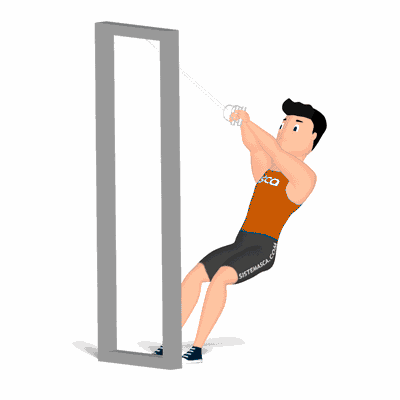

Agachamento Inclinado

Exercício para fortalecimento e hipertrofia dos músculos da coxa e glúteos, o agachamento possui diversas variações e uma delas é o Agachamento Inclinado. Trabalha também músculos auxiliares, tais como, os glúteos.
Ficha Técnica
Tipo: Musculação
Grupo Muscular: Perna
Aparelho: Nenhum
Músculos: Nenhum
Como realizar
- Agarre o pegador do aparelho e se posicione sobre a plataforma com os pés ligeiramente separados;
- A plataforma deverá estar inclinada;
- Posicionado sobre a plataforma, realize o agachamento até um ângulo de 90 graus em relação a plataforma;
- Os joelhos não deveram ultrapassar a linha dos pés;
- Com a força das coxas, empurre o corpo para cima e repita os movimentos.
 RC STORE
RC STORE